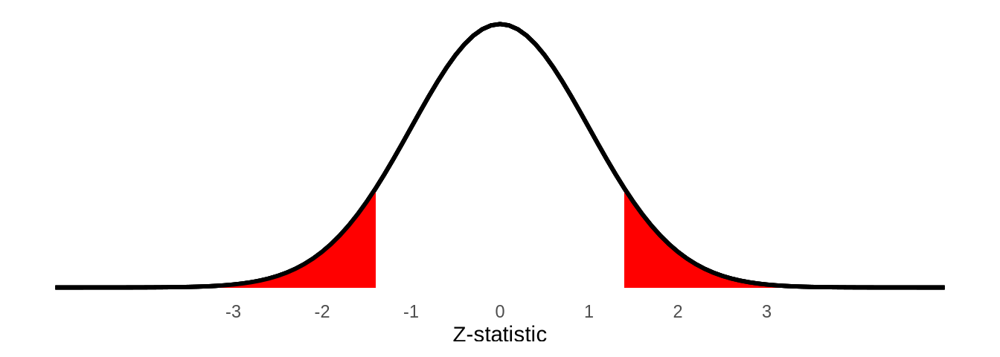
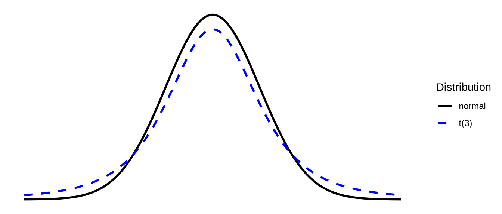
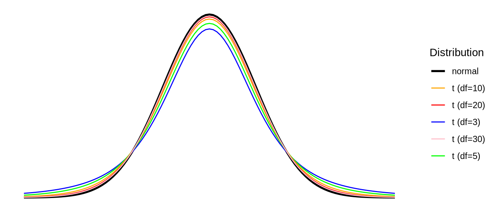
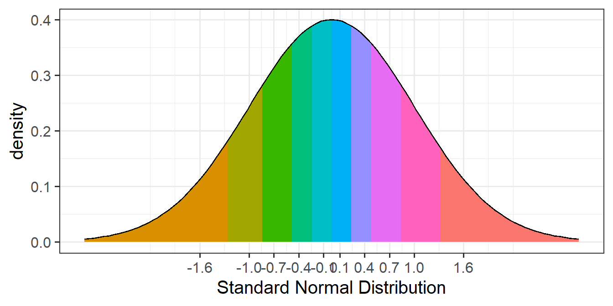
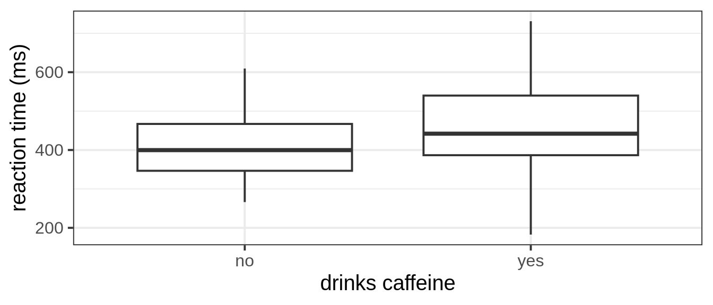

6: Practical Inference
You are viewing an interactive version of this reading.
Please allow ~30 seconds for packages to load before code chunks can be run
Click here for the static version
This reading:
- How does hypothesis testing work in practice?
- How do we do all this in R?
- spoiler: it’s easier than you think
- What are some basic hypothesis tests that we can conduct?
- Tests of a single continuous variable
- Tests of the relationship between a continuous variable and a binary categorical variable
In Chapter 5 we learned about the logic of Null Hypothesis Significance Testing (NHST), allowing us to draw perform inferentials tests about parameters in the population, based on statistics computed on the sample that we have collected.
NHST Recap
We have a sample (\(n=10\)):
And a sample mean:
We’re interested in whether - in the population - the mean of this variable is different from 0. So we are testing between two hypotheses:
- Null Hypothesis \(H_0: \mu = 0\).
- Alternative Hypothesis \(H_1: \mu \neq 0\).
Remember, there are lots of samples of size \(n=10\) that we could take, and they all have different means. To quantify the spread of these different means we can use the standard error, calculated using \(SE = \frac{\sigma}{\sqrt{n}}\):
We can use this information to express how far away from the null hypothesis (mean = 0) our observed sample is, in terms of standard errors:
\[ Z \ = \ \frac{\text{estimate}-\text{null}}{SE} \ = \ \frac{1.9 - 0}{1.39} \ = \ 1.36 \] We can then calculate, if the mean in the population is 0, what is the probability of obtaining a \(Z\)-statistic from a sample of this size at least as extreme as the one we have observed?
The resulting probability is our p-value:

As our \(p\)-value is above our threshold of \(\alpha=.05\), we fail to reject the null hypothesis that the mean in the population is zero.
We can get to the same conclusion by constructing a 95% confidence interval:
As this interval includes zero, then at the 5% level we fail to reject the null hypothesis that the population mean is zero.1
While in practice NHST follows the logic described above, there is something important that we have been sweeping under the carpet.
In our estimation of the standard error we have used the formula that includes \(\sigma\), which refers to the population standard deviation. However, we never know this value (because we don’t have data for the population), so we have been using the sample standard deviation \(s\) instead. This is an approximation, and might be okay when we have a very large \(n\) (meaning \(s\) provides an accurate estimate of \(\sigma\)), but in practice this is not always feasible. \[ SE = \frac{\sigma}{\sqrt{n}} \approx \frac{s}{\sqrt{n}} \]
\(t\) - distributions
To resolve the issues with the approximation of using \(s\) in place of \(\sigma\) to compute the standard error, we can move from using the normal distribution to referring to the \(t\)-distribution.
The \(t\) distribution is very similar to the normal distribution, but it has slightly heavier tails (see Figure 2). \(t\)-distributions are always centered on zero, and the precise shape (how heavy the tails are) depends upon a parameter known as the degrees of freedom.

Degrees of Freedom - \(df\)
‘Degrees of freedom’ is a tricky concept. One of the most intuitive ways to understand it is to think of it as the number of independent bits of information that go into calculating an estimate. Put another way, it is the number of datapoints that are free to vary.
Degrees of freedom (df)
Suppose we have four unknown numbers (\(a\), \(b\), \(c\) and \(d\)) which must have a mean of 5.
Do the following, in order:
- Choose a value for \(a\).
- Choose a value for \(b\).
- Choose a value for \(c\).
- Can you choose a value for \(d\) while ensuring the mean of the four numbers you have chosen is 5?
You are free to choose anything you like for \(a\), \(b\) and \(c\).
But once those are fixed, you have no freedom to choose \(d\).
Example:
- \(a\) = 1
- \(b\) = 2
- \(c\) = 3
We know that \(\frac{1+2+3+d}{4} = 5\) So there is only one possible value for \(d\):
\(\frac{1+2+3+d}{4} = 5\)
\(1+2+3+d = 5*4\)
\(1+2+3+d = 20\)
\(d = 20-3-2-1\)
\(d = 14\)
When we estimate the mean from a sample, we use up one of our degrees of freedom, and so our test of a single mean will require us to use a \(t\)-distribution with \(n-1\) degrees of freedom. For \(t\)-distributions, as the \(df\) increases the distribution becomes closer and closer to a normal distribution (see Figure 3) - the use of these \(t\)-distributions is exactly what we need in order to account for using \(s\) in our calculation of the standard error.2

To make use of the \(t\)-distribution in hypothesis testing, we need to move to performing \(t\)-tests!
The logic remains the same as before, but where we previously were relying on the normal distribution:
pnorm()for our \(p\)-valuesqnorm()in order to calculate our confidence intervals (qnorm(0.975)gives the 1.96 we have been using)
We can use pt() and qt() to conduct the same process but in reference to the appropriate \(t\)-distribution.
\(t\) -test demonstration
Let us then perform a more appropriate test against the null hypothesis that the mean in the population is zero. It is going to look pretty much the same as it did previously, but things like “Z” and “norm” are going to be replaced with “t”.
For example, our test-statistic is now going to be a \(t\)-statistic:
\[ \begin{align} & t = \frac{\bar x - \mu_0}{\frac{s}{\sqrt{n}}}\\ \ \\ & \text{where:} \\ & \bar x : \text{sample mean} \\ & \mu_0 : \text{hypothesised population mean} \\ & s : \text{sample standard deviation} \\ & n : \text{sample size} \\ \end{align} \] Which can be calculated as:
While the calculation is just the same as it was previously, we’re calling it a \(t\)-statistic because we are going to compare it to a reference \(t\)-distribution. As our sample has \(n=10\), and as part of the statistic we are estimating a mean, the relevant \(t\)-distribution for us has 9 (\(10-1\)) degrees of freedom (we lose one by calculating the mean).
Our p-value can be found with the pt() function:
And our confidence interval can be constructed using: \[
\text{CI} = \bar{x} \pm t^* \times SE \\
\] Note that \(t^*\) has replaced the 1.96 we saw in previous chapters, because we obtained that using the normal distribution. The code qnorm(c(0.025, 0.975)) showed us that 95% of normal distribution is beyond 1.96 from the mean. But what we actually want to know is where 95% of the \(t\)-distribution with \(df=9\) lies:
So instead we can use:
And our confidence interval is:
Make life easier with R
All of the above is crucial for understanding how this all works, but in practice we can avoid all of the rigmarole of ever calculating the standard error or using functions like pt(), qt(). This is where R starts to become far more powerful - there are functions that do all this sort of stuff for us - in just one single line of code!
Take a look at the output of the function below. I have given it the sample, and specified that we want it to test against the null hypothesis that \(\mu=0\).
The t.test() function here gives us the \(t\)-statistic, the \(df\), the \(p\)-value, the 95% CI, the mean \(\bar x\), and it even tells us the alternative hypothesis (that the true mean is \(\neq 0\)).
All of these numbers will match those that we calculated above (there may be a small bit of rounding error).
It’s that easy!
Assumptions
Statistical tests often require us to meet a set of conditions in order for our inferences to be valid. When we perform tests like these that involve estimating a mean, a common requirement is that the deviations from that mean are close to normally distributed. For t-tests, this assumption can be relaxed somewhat in cases where our sample size is larger and there is not too much skew.3
Assumption Plots
We can evaluate how close to normal a distribution is by visualising it via histograms and density plots and making a judgment call, but this can sometimes be hard:
Another useful visualisation tool is the QQplot. The closer to the diagonal line, the closer our data is to being normally distributed:
optional: what are the ’theoretical quantiles?
The theoretical quantiles are the equivalent quantiles of the standard normal distribution (see Chapter 4 #standard-normal-distribution).
In the data$mysample example above, we have 10 datapoints. If we cut the standard normal distribution into 10 sections of equal area (see Figure 4), it is the points on the x-axis at the center of each area that we are plotting our data against.

Assumption Tests
There are also, if we wish to make use of them, specific hypothesis tests that assess normality, such as the ‘Shapiro-Wilks’ Test. The null hypothesis for this test is that the data we give it are drawn from a normal distribution. This means that we want a p-value greater than .05. So in the example below, we have no reason to reject the hypothesis that our data are drawn from a normal distribution. This means we can continue to conduct a t-test.
Basic Tests
Now that we’ve gone through all the nitty-gritty bits of how hypothesis testing works, the heavy lifting is done.
we’re going to start to look at some of the different basic hypothesis tests that we can perform.
For each test below we show an example conducted the quick way (e.g. t.test() function), and also the manually computations (for those of you who are interested!). We’ve already seen the one sample \(t\)-test in the example above, so you might want to skim over that section.
something to bear in mind
These tests are the simple hypothesis tests that were developed in the 19th and 20th centuries, and provide a good basis of understanding the null hypothesis significance testing framework.
In the latter half of this course, we move to focus on a modelling based approach for analysing data. We will start to see how many of these simple tests that we are learning now are actually special cases of a more general statistical model.
One sample t-test
Purpose
The one sample t-test is what we have already seen above. We use it to test whether the mean is different from/greater than/less than some hypothesised value.
- Examples:
- Is the mean age of USMR students different from 20?
- Is the mean IQ different from 100?
- Do people read more than 250 words per minute?
Assumptions:
- The data are continuous (not discrete)
- The data are independent (i.e. the value of a datapoint does not depend on the value of another datapoint in any way)
- The data are normally distributed (can be relaxed somewhat if the sample size is “large enough” (rule-of-thumb n = 30) and the data are not strongly skewed)
Research Question & Data
Research Question: Do people read more than 250 words per minute?
Fifty participants were recruited and tasked with reading a passage of text that was 2000 words long. Their reading times (in words per minute) was recorded, and these are accessible at https://uoepsy.github.io/data/usmr_tread.csv.
Descriptives and Assumptions
Below are some quick descriptives.
Our histogram looks roughly normally distributed. We can (if we like), test this using the Shapiro-Wilk test.
The \(p\)-value of 0.126 is \(>.05\), so we fail to reject the null hypothesis that the data come from a normal distribution. In other words, we have no reason to consider our assumption to be violated.
Quick and easy
t.test()
Paying careful attention to the research question (“Do people read more than 250 words per minute?”), our null hypothesis here is that reading time is \(\leq 250\) words per minute (wpm), and our alternative hypothesis is that it is \(>250\) wpm.
This means that we will reject our null hypothesis if we get a test statistic indicating the mean is \(>250\). We won’t reject it if the mean is \(<250\).
We specify the direction of the alternative in the t.test() function:
Step-by-step calculations
Our test-statistic is calculated as \[ t = \frac{\bar x - \mu_0}{\frac{s}{\sqrt{n}}} \]
There’s a lot of brackets in the code below, so go through it piece by piece if you are unsure of how it matches to the formula above
The test we are performing is against the null hypothesis that \(\mu_0 \leq 250\). So we will only reject the null hypothesis if we get a test statistic indicating the mean is \(>250\). This means that our p-value will be just the one tail of the \(t\)-distribution:
Write-up
A one-sample t-test was conducted in order to determine if the average reading time was significantly (\(\alpha=.05\)) higher than 250 words per minute (wpm).
The sample of 50 participants read on average at 258 words per minute (Mean=258, SD=32). This was significantly above 250 (\(t(49)=1.84, p = .036\), one-tailed).
Two sample t-test
Purpose
The two sample t-test is used to test whether the mean of one group is different from/greater than/less than the mean of another.
- Examples:
- Is the mean age of cat people different from the mean age of dog people?
- Do people who identify as “morning people” have a higher average rating of sleep quality than those who identify as “evening people”?
- Is the average reaction time different between people who do and don’t drink caffeinated drinks?
Assumptions:
- The data are continuous (not discrete)
- The data are independent (i.e. the value of a datapoint does not depend on the value of another datapoint in any way)
- The data are normally distributed for each group (can be relaxed somewhat if the sample size is “large enough” (rule-of-thumb n = 30) and the data are not strongly skewed)
- The variance is equal across groups*.
*We can relax this assumption by using an adjusted test called the “Welch \(t\)-test”, which calculates the standard error slightly differently, and estimates the degrees of freedom differently too. This is actually the default in R, and we change this easily in R using t.test(...., var.equal = FALSE/TRUE)
Research Question & Data
Research Question: Is the average reaction time different between people who do and don’t drink caffeinated drinks?
One hundred participants were recruited and completed a simple reaction time task. They were also surveyed on whether they regularly drank caffeine in any form. The data are accessible at https://uoepsy.github.io/data/usmr_tcaff.csv.
Descriptives and Assumptions
First some quick descriptive stats. We’ll calculate the mean and standard deviation of reaction times for each group:
And we can make a plot here:
The data look fairly close to normally distributed for each group here. One thing to note is that the variances look like they may be different between the two groups. The caffeine drinkers’ reaction time’s have a standard deviation of 109ms, and the non-caffeine drinkers have an sd of only 89ms.
As before, we can (if we are so inclined) rely on specific tests of these assumptions, such as using shapiro.test() for the distribution in each group separately.
Similarly, the var.test() function performs a test to compare two variances (the null hypothesis of this test being that they are equal). However, it is more common to simply perform the Welch test straight away, and thus not have to worry about this assumption.
Quick and easy
t.test()
We can give R the two sets of data in two ways. Either by extracting the relevant entries:
Or using the formula notation, with the ~ (“tilde”) symbol. In R, you can interpret y ~ x as “y is modeled as a function of x”. By splitting the numeric values (rt variable) by the categories of the caff variable, we can conduct a \(t\)-test using:
Note that the default behaviour of t.test() is to perform the Welch test - so we don’t have to assume equal variances. If we want to override this, we can use t.test(rt ~ caff, data = tcaff, var.equal = TRUE).
Step-by-step calculations
Our test statistic here is:4
\[
\begin{align}
& t = \frac{\bar x_1 - \bar x_2}{SE}\\
\ \\
& \text{where:} \\
& \bar x_1 : \text{sample mean group 1} \\
& \bar x_2 : \text{sample mean group 2} \\
& SE : \sqrt{\frac{s^2_1}{n_1} + \frac{s^2_2}{n_2}} \\
& s_1 : \text{sample standard deviation of group 1} \\
& s_2 : \text{sample standard deviation of group 2} \\
& n_1 : \text{sample size group 1} \\
& n_2 : \text{sample size group 2} \\
\end{align}
\]
We can calculate each part:
plugging these bits in gives us: \[ \begin{align} SE & = \sqrt{\frac{s^2_1}{n_1} + \frac{s^2_2}{n_2}} = \sqrt{\frac{7906}{40} + \frac{11892}{60}} = \sqrt{395.85} \\ \qquad \\ & = 19.9 \end{align} \] and \[ \begin{align} t & = \frac{\bar x_1 - \bar x_2}{SE} = \frac{408.1 - 464.8}{19.9} \\ \qquad \\ & = -2.849 \\ \end{align} \]
Our \(p\)-value is determined against a \(t\)-distribution with a specific number of degrees of freedom. We are estimating two means here, the standard two-sample t-test uses \(df = n-2\). However, the Welch t-test, which we performed quickly with t.test(), where we don’t assume equal variances, makes the calculation of the degrees of freedom much more complicated.5
Using the same degrees of freedom as was used in the quick use of t.test() above, we get out our same p-value (or thereabouts - we have some rounding error):
Write-up
A Welch two sample t-test was used to assess whether the mean reaction time of people who regularly drink caffeine (\(n = 60\)) was different to that of people who do not (\(n=40\)). There was a significant difference in average reaction time between the caffeine (Mean=465; SD=109) and non-caffeine (Mean=408; SD=89) groups (\(t(93.97)=-2.85, p = 0.005\), two-tailed). Therefore, we reject the null hypothesis that there is no difference in reaction times between caffeine drinkers and non-caffeine drinkers.

Paired sample t-test
Purpose
The paired sample t-test is used to test whether the mean difference between two sets of paired observations is different from 0.
- Examples:
- Is the mean cognitive score of participants at age 60 different from when they are re-tested at age 70?
- Are scores on test 1 different on average from scores on test 2 (with participants completing both tests).
- Is the mean cognitive score of participants at age 60 different from when they are re-tested at age 70?
Assumptions:
- The data are continuous (not discrete)
- The differences are independent (i.e. the value of a the difference for one pair does not depend on the values of another pair in any way)
- The differences are normally distributed OR the sample size is large enough (rule-of-thumb n = 30) and the data are not strongly skewed
Research Question & Data
Research Question: Is the mean cognitive score of participants at age 60 different from when they are re-tested at age 70?
Addenbrooke’s Cognitive Examination-III (ACE-III) is a brief cognitive test that assesses five cognitive domains: attention, memory, verbal fluency, language and visuospatial abilities. The total score is 100 with higher scores indicating better cognitive functioning. A research project is examining changes in cognitive functioning with age, and administers the ACE-III to a set of participants at age 60, then again at age 70. The data is accessible at https://uoepsy.github.io/data/usmr_tcaff.csv.
The paired t test is the one sample t test in disguise
We can either perform this with the data exactly as it is:
Or we can compute the differences, and perform a one sample test on the mean of those differences being different from 0.
It’s just the same result:
Footnotes
Remember that confidence intervals provide a range of plausible values for the population mean. In this case, zero is a plausible value.↩︎
This is because with smaller samples we have less certainty in the estimate of the population standard deviation, and our estimates of mean and standard deviation are more dependent on one another. The bottom part of \(\frac{\bar x - \mu}{SE}\) has a greater chance of being smaller than the top part, meaning that our resulting our test statistics will tend to be slightly bigger. To better represent this greater chance of seeing bigger test statistics from small samples, our \(t\)-distributions have heavier tails.↩︎
This is because, practically speaking, what we really need in order to make useful, defensible conclusions, is not that the population itself is normally distributed, but that the sampling distribution of the statistic is close enough to the \(t\)-distribution. This can often be the case when we have a large sample without much skew.↩︎
The formula here is for the Welch test.
For a standard two sample t-test that assumes equal variances, we first calculate the “pooled standard deviation” - \(s_p = \sqrt\frac{(n_1 - 1)s_1^2 + (n_2 - 1)s_2^2}{n_1 + n_2 - 2}\).
We then use this to calculate the standard error - \(SE_{(\bar{x}_1 - \bar{x}_2)} = s_p \sqrt{\frac{1}{n_1} + \frac{1}{n_2}}\)↩︎If you really want it, the formula is: \(\text{df}=\frac{\left(\dfrac{s_1^2}{n_1}+\dfrac{s_2^2}{n_2}\right)^2}{\dfrac{\left(\dfrac{s_1^2}{n_1}\right)^2}{n_1-1}+\dfrac{\left(\dfrac{s_2^2}{n_2}\right)^2}{n_2-1}}\)↩︎